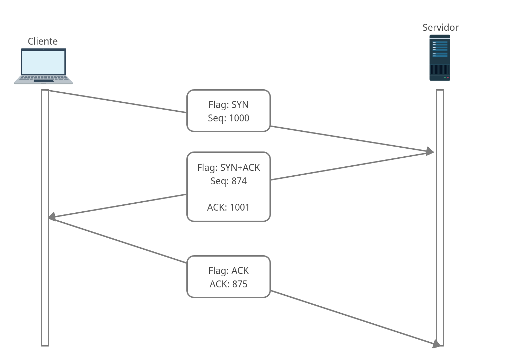

Índice109.1 Fundamentos de Protocolos de InternetIPClassesEndereços PrivadosMáscara de RedeCIDR - Classes Inter-Domain RoutingUma forma mais rápidaGatewayIPv6 - Internet Protocol Versão 6AbreviaçõesTipos de EndereçosTCP - Transmission Control ProtocolUDP - User Datagram ProtocolICMP - Protocolo de Mensagens de Controle da InternetICMPv6 - Internet Control Message Protocol versão 6Portas
O TCP/IP é uma pilha de protocolos usados para comunicação entre dispositivos, principalmente na internet. Apesar do nome, ele é uma (suite) de protocolos, existem muitos protocolos que fazem parte dessa pilha e que podem ser usados, como: IP, TCP, UDP, ICMP entre outros.
É o responsável pelo endereçamento lógico, é nele que vai o IP, o TCP é apenas o protocolo de transporte.
Hoje temos duas versões do IP, sendo a versão 4 e a versão 6.
IPv4
O endereço IPv4 é formado por 32 bits no total, separado em 4 grupos de 8 bits, sempre representado por numeros Decimais.
Ex.: 192.168.0.1
IPv6
O endereço IPv6 é formado por 128 bits no total, separado em 8 grupos de 16 bits (Cada digito equivale a 4 bits, sendo 16 bits por grupo), sempre representado por numeros Hexadecimais, sendo separados por :.
Ex.: 2001:0db8:85a3:08d3:1319:8a2e:0370:7344
Para que um pacote possa ser encaminhado para outro na rede, se utiliza o IP, caso estejam em 2 redes diferentes, como a internet, na mesma rede é utilizado o endereço MAC (Media Access Control Address) e quem faz o encaminhamento é o switch, se utiliza o IP para encaminhar da na camda de aplicação, mas o switch vai usar o MAC (para comunicação na mesma rede).
Para saber se ambos os dispositivos que se comunicam estão na mesma rede é usado a subrede do endereço, dessa forma é possível determinar se eles pertencem a mesma rede, caso não estejam, o pacote é enviado para o gateway da rede para que ele possa encaminhar para o lugar correto, e caso seja, o switch vai fazer o trabalho de encaminhar o pacote.
Antigamente usavam classes de endereços para fazer a separação entre redes (hoje em dia usamos o sistema CIDR), o problema é que com essa separação, um grande bloco era separado por causa da classe e muitos endereços eram disperdiçados, por isso não se usa mais o sistema de Classe. Mas vamos ver como isso era feito:
| Classe | Equivale ao CIDR | Começo | Final | Nº de Endereços por Rede |
|---|---|---|---|---|
| A | /8 | 1.0.0.0 | 126.255.255.255 | 16 777 216 |
| B | /16 | 128.0.0.0 | 191.255.255.255 | 65 536 |
| C | /24 | 192.0.0.0 | 223.255.255.255 | 256 |
| D | 224.0.0.0 | 239.255.255.255 | Multicast | |
| E | 240.0.0.0 | 255.255.255.254 | atualmente reservada a testes pela IETF |
O sistema CIDR (usado atualmente) provê uma melhor separação de endereços por sub-redes e evita o disperdício de IP nessas mesmas subredes, com isso, evitamos ter sub-redes com muitos IPs, onde a maioria não vai ser usada. Com esse sistema foi introduzido os bits da porção de rede e os bits da porção de host, e com isso, temos um melhor controle.
Por padrão usamos apenas as três primeiras classes, sendo elas: Classe A, Classe B e Classe C, já que as demais (Classe D e E) são reservadas.
Exemplos de IPs por classe:
| Classe | IP | Porção de rede | Porção de Host |
|---|---|---|---|
| A | 2.134.213.2 | 2.134.213.2 | 2.134.213.2 |
| B | 135.58.24.17 | 135.58.24.17 | 135.58.24.17 |
| C | 192.168.178.1 | 192.168.178.1 | 192.168.178.1 |
Note que parece muito com os CIDR redondo que temos hoje (/8, /16 e /24) e de certa forma é, mas com CIDR nós podemos segmentar as redes de forma muito mais inteligente, dendo CIDR "quebrados" (como: /17, /18, /25, /28 e por ai vai).
Três faixas são atualmente reservadas para redes privadas, ou seja, para serem usados em endereços que não podem ser roteados na internet. Dentro das classes A, B e C foram reservadas redes (normalizados pela RFC 1918 e também pelas RFCs 3330 e 3927) que são conhecidas como endereços de rede privada.
| Classe | Começo | Final |
|---|---|---|
| A | 10.0.0.0 | 10.255.255.255 |
| B | 172.16.0.0 | 172.31.255.255 |
| C | 192.168.0.0 | 192.168.255.255 |
Uma sub-rede é uma divisão de uma rede de computadores. A divisão de uma rede grande em redes menores diminui o tráfego da rede, facilita a administração e melhora performance da rede. No IPv4 uma sub-rede é identificada por seu endereço base e sua máscara de sub-rede.
A máscara de rede padrão acompanha a classe do endereço IP: num endereço de classe A, a máscara será 255.0.0.0, indicando que o primeiro octeto se refere à rede e os três últimos ao host.
Num endereço classe B, a máscara padrão será 255.255.0.0, onde os dois primeiros octetos referem-se à rede e os dois últimos ao host, e num endereço classe C, a máscara padrão será 255.255.255.0 onde apenas o último octeto refere-se ao host.
Tudo que foi explicado acima é conhecido como Classfull, onde usamos o endereço de máscara de rede padrão, ou seja, o valor cheio, isso ainda é usado, mas o sistema de separação por Classes não é mais, apesar de mantermos apenas o ClassFull. Com a chegada do ClassLess temos o conhecido CIDR, que vamos focar agora.
Os 32 bits das máscaras de sub-rede são divididos em duas partes:
Normalmente, as máscaras de sub-rede são representadas com quatro números de 0 a 255 separados por pontos, como a máscara 255.255.255.0 (ou, em binário, 11111111.11111111.11111111.00000000), onde a porção com 1 representa a rede e a porção com 0 representa os hosts.
Embora normalmente as máscaras de sub-rede sejam representadas em notação decimal, é mais fácil entender seu funcionamento usando a notação binária para que você aprenda como é feito. Para determinar qual parte de um endereço é o da rede e qual é o do host, um dispositivo deve realizar a operação AND.
| Endereço Decimal | Binário | |
|---|---|---|
| Endereço completo | 192.168.5.10 | 11000000.10101000.00000101.00001010 |
| Máscara da sub-rede | 255.255.255.0 | 11111111.11111111.11111111.00000000 |
| Porção da rede | 192.168.5.0 | 11000000.10101000.00000101.00000000 |
A porção da rede é o resultado de um AND entre o endereço da rede e a máscara. Dado o exemplo acima, vamos ver o processo para calcular a rede.
1° - Converta o IP e Máscara para binário.
2° Agora vamos fazer a operação AND, não é uma soma, nem subtração, nem divisão, é uma operação chamada AND.
1 com 1 vai dar sempre 1, 0 com 1 ou 1 com 0 vai dar zempre 0.
Exemplo:
167 = 10100111
255 = 11111111
Eu destaquei em negrito os valores do AND onde vamos ter 1 como valor, o resultado é 10100111 (167), é dessa forma que equipamentos conseguem calcular de qual rede se trata aquele IP.
Vamos ver um exemplo completo abaixo:
| Endereço Decimal | Binário | |
|---|---|---|
| Endereço completo | 192.168.5.130 | 11000000.10101000.00000101.10000010 |
| Máscara de sub-rede | 255.255.255.192 | 11111111.11111111.11111111.11000000 |
| Porção da sub-rede | 192.168.5.128 | 11000000.10101000.00000101.10000000 |
No exemplo dois bits foram emprestados da porção do host e usados para identificar a sub-rede.
Vamos calular a Rede:
IP = 11000000.10101000.00000101.10000010 (192.168.5.130)
Máscara = 11111111.11111111.11111111.11000000 (255.255.255.192)
Resultado: 11000000.10101000.00000101.10000000 (192.168.5.128)
Cada octeto tem 8 dígitos, ou seja, 8 bits, onde cada dígito equivale a 1 bit, para calcular cada posição dentro do octeto usamos a base 2 (binário), exemplo:
x# Os b abaixo são os bits.bbbbbbbb.bbbbbbbb.bbbbbbbb.bbbbbbbb# Essa é a forma escrita de um IPv4, vamos analisar apenas 1 octeto, ou seja, apenas o primeiro campo, a forma explicada aqui equivale para todos os outros campos.2⁷ 2⁶ 2⁵ 2⁴ 2³ 2² 2¹ 2⁰b b b b b b b b# Cada expoente possui sempre o mesmo valor, então voce deve decorar isso:2⁷ 2⁶ 2⁵ 2⁴ 2³ 2² 2¹ 2⁰128 64 32 16 8 4 2 1# Quando o b é igual a 0, nós não levamos a exponenciação, mas quando o b é igual a 1, ai sim nós levamos, vamos ver umas contas:2⁷ 2⁶ 2⁵ 2⁴ 2³ 2² 2¹ 2⁰1 1 0 0 0 0 0 0# Vamos contar a casa do expoente apenas onde tem o bit igual a 1: # A conta seria assim:2⁷ + 2⁶2⁷ = 128 2⁶ = 64128+64 = 192# Ou seja, o binário que calculamos tem o valor de 192.## Vamos ver outras contas:2⁷ 2⁶ 2⁵ 2⁴ 2³ 2² 2¹ 2⁰1 1 0 1 0 1 0 02⁷ + 2⁶ + 2⁴ + 2²128+64+16+4 = 212################2⁷ 2⁶ 2⁵ 2⁴ 2³ 2² 2¹ 2⁰0 0 0 1 0 1 0 02⁴ + 2²16+4 = 20################2⁷ 2⁶ 2⁵ 2⁴ 2³ 2² 2¹ 2⁰0 1 1 1 1 1 1 02⁶ + 2⁵ + 2⁴ + 2³ + 2² + 2¹64+32+16+8+4+2 = 126################2⁷ 2⁶ 2⁵ 2⁴ 2³ 2² 2¹ 2⁰1 1 1 1 1 1 1 12⁷ + 2⁶ + 2⁵ + 2⁴ + 2³ + 2² + 2¹ + 2⁰128+64+32+16+8+4+2+1 = 255################2⁷ 2⁶ 2⁵ 2⁴ 2³ 2² 2¹ 2⁰1 1 0 1 0 1 1 12⁷ + 2⁶ + 2⁴ + 2² + 2¹ + 2⁰128+64+16+4+2+1 = 215# Precisa fazer essa mesma conta para todo os campos, fazer a operação AND e depois somar a exponenciação para ver quanto deu.
Vamos pegar um exemplo completo para que voce veja passo a passo:
| IP | Máscara |
|---|---|
| 192.168.14.180 | 255.255.255.192 = /26 |
| 14.10.19.88 | 255.255.255.224 = /27 |
| 171.64.32.223 | 255.255.255.0 = /24 |
Vamos ver o primeiro IP (192.168.14.180):
IP = 11000000.10101000.00001110.10110100 = 192.168.14.180
Máscara = 11111111.11111111.11111111.11000000 = /26
Resultado: 11000000.10101000.00001110.10000000 = 192.168.14.128
Quantidade total de IPs nessa subrede 256-192 = 64 Esse 192 são os 2 bits que foram emprestados da parte host para parte de rede (128+64 = 192). Como começa em zero, de zero até 255 equivale a um total de 256.
Quantidade de IPs válidos na rede Para isso vamos pega a quantidade de IPs totais e subtrair 2: 64-2 = 62
Quantidade de sub-rede Para isso vamos dividir 256 pela quantidade totais de IPs por subrede: 256/64 = 4 Ou seja, um /26 pode ter até 4 sub-redes, isso se todas as 4 redes forem /26.
Pegando o último IP válido da rede
Para isso, pegue o IP, mantenha a porção de rede como está, e coloque tudo 1 na portção de host:
IP = 11000000.10101000.00001110.10 110100
Deixei em negrito toda a parte de rede, agora vamos pegar a parte do Host e deixa com 1 111111, ficando assim o IP:
IP = 11000000.10101000.00001110.10 111111 192.168.14.191
Descobrindo qual número da nossa sub-rede
Para isso vamos dividir o IP do Broadcast (191) pela quantidade de IPs disponíveis para o uso:
191/62 = 3
Na verdade da 3,080645161, mas pegamos apenas o 3.
| Calculos | |
|---|---|
| IP | 192.168.14.180 |
| Rede do qual o IP faz parte | 192.168.14.128 |
| Primeiro IP usável | 192.168.14.129 |
| Último IP usável | 192.168.14.190 |
| Broadcast | 192.168.14.191 |
| Total de IPs válidos | 62 |
| Total de Sub-redes | 4 |
| Qual número da nossa subrede | 3° |
Vamos ver o primeiro IP (14.10.19.88):
IP = 00001110.00001010.00010011.01011000 = 14.10.19.88
Máscara = 11111111.11111111.11111111.11100000 = /27
Resultado: 00001110.00001010.00010011.01000000 = 14.10.19.64
Quantidade total de IPs nessa subrede 256-224 = 32 Esse 224 são os 3 bits que foram emprestados da parte host para parte de rede (128+64+32 = 224). Como começa em zero, de zero até 255 equivale a um total de 256.
Quantidade de IPs válidos na rede Para isso vamos pega a quantidade de IPs totais e subtrair 2: 32-2 = 30
Quantidade de sub-rede Para isso vamos dividir 256 pela quantidade totais de IPs por subrede: 256/32 = 8 Ou seja, um /27 pode ter até 8 sub-redes, isso se todas as 8 redes forem /27.
Pegando o último IP válido da rede
Para isso, pegue o IP, mantenha a porção de rede como está, e coloque tudo 1 na portção de host:
IP = 00001110.00001010.00010011.01011000
Deixei em negrito toda a parte de rede, agora vamos pegar a parte do Host e deixa com 1 111111, ficando assim o IP:
IP = 00001110.00001010.00010011.01011111 14.10.19.95
Descobrindo qual número da nossa sub-rede
Para isso vamos dividir o IP do Broadcast (95) pela quantidade de IPs disponíveis para o uso:
95/30 = 3
Na verdade da 3,166666667, mas pegamos apenas o 3.
| Calculos | |
|---|---|
| IP | 14.10.19.88 |
| Rede do qual o IP faz parte | 14.10.19.64 |
| Primeiro IP usável | 14.10.19.65 |
| Último IP usável | 14.10.19.94 |
| Broadcast | 14.10.19.95 |
| Total de IPs válidos | 30 |
| Total de Sub-redes | 8 |
| Qual número da nossa subrede | 3° |
Vamos ver o primeiro IP (171.64.32.223):
IP = 10101011.01000000.00100000 .11011111 = 171.64.32.223
Máscara = 11111111.11111111.11111111.00000000 = /24
Resultado: 10101011.01000000.00100000.00000000 = 171.64.32.0
Quantidade total de IPs nessa subrede 256-0 = 256 Como é um Classfull, não emprestamos nada, ficando zerado. Como começa em zero, de zero até 255 equivale a um total de 256.
Quantidade de IPs válidos na rede Para isso vamos pega a quantidade de IPs totais e subtrair 2: 256-2 = 254
Quantidade de sub-rede Para isso vamos dividir 256 pela quantidade totais de IPs por subrede: 256/256 = 1 Ou seja, um /24 pode ter até 1 sub-rede, que é a sub-rede do qual ele faz parte hehe.
Pegando o último IP válido da rede
Para isso, pegue o IP, mantenha a porção de rede como está, e coloque tudo 1 na portção de host:
IP = 10101011.01000000.00100000.11011111
Deixei em negrito toda a parte de rede, agora vamos pegar a parte do Host e deixa com 1 111111, ficando assim o IP:
IP = 10101011.01000000.00100000.11111111 171.64.32.255
Descobrindo qual número da nossa sub-rede
Para isso vamos dividir o IP do Broadcast (255) pela quantidade de IPs disponíveis para o uso:
255/254 = 1
Na verdade da 1,003937008, mas pegamos apenas o 1, isso porque não existe outra subrede por ser um endereço Classfull.
| Calculos | |
|---|---|
| IP | 171.64.32.223 |
| Rede do qual o IP faz parte | 171.64.32.0 |
| Primeiro IP usável | 171.64.32.1 |
| Último IP usável | 171.64.32.254 |
| Broadcast | 171.64.32.255 |
| Total de IPs válidos | 254 |
| Total de Sub-redes | 1 |
| Qual número da nossa subrede | 1° |
Uma maneira mais rápida de achar o IP da rede sem fazer a operação AND é fazer isso de forma direta e rápida, por exemplo:
IP = 00001110.00001010.00010011.01011000 = 14.10.19.88/27
Como o IP acima é um /27, vamos manter inalterados os 27 bits da esquerda para direita (bits da porção de redes), e depois vamos transformar os bits de host em 0.
IP do host = 00001110.00001010.00010011.01011000 = 14.10.19.88/27
IP da rede = 00001110.00001010.00010011.01000000 = 14.10.19.64/27
Dessa forma não precisamos fazer a operação AND e conseguimos economizar tempo.
##
Também conhecido como roteador, pode ser um computador com duas ou mais interfaces de rede, onde cada interface estará numa rede ou um equipamento especifico para essa finalidade. Sua principal funcionalidade é fazer a comunicação entre duas redes distintas, ou seja, o roteador vai pegar um pacote de um rede e possibilitar que esse pacote passe para outra rede, tornando possivel que duas ou mais redes consigam se comunicar.
O gateway de uma rede normalmente é a rota padrão ou default (padrão em inglês), com isso, quando você vai se comunicar com um endereço que não está na mesma rede, o pacote é enviado para a rota padrão, que no caso é o gateway, e ele que vai rotear para outra rede, podendo ser até a internet.
O IPv6 veio para suprir a falta de endereços IPv4. Como informado aqui, o IPv6 possui um total de 128 bits, separados em 8 grupos de 16 bits cada, onde cada grupo é separado por :, sua notação é em Hexadecimal e cada Hexa possui um peso de 4 bits.
Como o IPv6 é um número muito grande, podemos abreviar ele, mas só podemos abreaviar 1 vez usando a notação ::, e zeros a esquerda podem ser omitidos, desde que sobre no mínimo um 0 para não criar a abreviação :: que só pode ser usada 1 vez.
xxxxxxxxxx### Vamos a um exemplo:2001:0db8:85a3:0000:0000:0000:0000:7344# Esse é um IPv6 completo, mas podemos omitir os zeros a esquerda:2001:0db8:85a3:0:0:0:0:7344# Agora podemos omitir usando a notação '::'2001:0db8:85a3::7344# Esse é o máximo que podemos omitir, e só podemos fazer isso onde temos 0.### Vamos ver outro exemplo:2001:0db8:85a3:0000:0000:1319:0000:7344# Vamos omitir os zeros a esquerda:2001:0db8:85a3:0:0:1319:0:7344# Agora podemos omitir usando a notação '::'2001:0db8:85a3::1319:0:7344# Esse é o máximo que podemos omitir, e só podemos fazer isso onde temos 0.# Observe que temos um zero ali no final, mas não podemos abreviar usando '::' mais de uma vez.
Com o surgimento do IPv6 tivemos alguns tipos de endereços que surgiram, sendo eles:
| Tipo de endereço | Descrição |
|---|---|
| Unicast | Identifica um único Host. |
| Multicast | Identifica um grupo de Hosts. |
| Anycast | Identifica um host de um grupo que está mais próximo. |
Comunicações TCP são por definição orientadas a conexão, isso significa que antes de que aconteça uma transmissão de dados, ambos os sistemas (cliente e servidor) devem iniciar um processo de "apresentação", onde ambos vão estabelecer uma conexão, isso é chamado de Three-way Handshake.
Ele é usado para estabelecer uma comunicação entre cliente e servidor. Todo esse processo no TCP é feito usando flags do pacote TCP, no estabelecimento de uma conexão, existem 3 flags em uso, veja como ocorre:

O cliente envia um pacote com a flag SYN ativa (SYN=Synchronize (Sincronizar)), junto dessa flag temos um número que identifica esse pacote; Isso informa ao servidor que existe um cliente querendo estabalecer uma conexão com ele, após o servidor receber o pedido de sincronização, ele devolve um pacote visto no passo 2.
Sobre o número do pacote, pode começar com qualquer numeração, não tendo um valor fixo todas as vezes.
O servidor responde com um pacote com as flags SYN+ACK ativas; ACK significa que o servidor recebeu o pedido de sincronização (Ele informa o número de sequencia do pacote que recebeu incrementado de 1, é como dizer, recebi seu pacote) e SYN significando que o servidor também quer sincronizar uma conversação com o cliente (Ele também envia um número de sequencia identificando o pacote, esse número é totalmente diferente do enviado pelo cliente e não possuem relação direta).
O cliente responde com um pacote ACK, reconhecendo o ultimo pacote enviado pelo servidor. Agora ambos vão ter uma sessão aberta para poderem se comunicar, e logo após isso, o cliente pode solicitar dados do servidor que o transmitirá caso possível.
Além disso, o TCP vai garantir a entrega dos pacotes e na ordem correta, isso se deve um buffer usado para armazenar e re-ordenar os pacotes, para que ele possam ser entregues na ordem correta para a aplicação. Caso tenha perda de pacote, o TCP que vai fazer a retransmissão do pacote novamente, ele é usado por muitos serviços como FTP, SMTP, HTTP, entre outros.
Todo esse processo descrito acima não ocorre no UDP, pois o mesmo não é orientado a conexão, ele também não é um protocolo fim a fim, porque não faz verificação de integridade dos dados (Não consegue saber se falta pacote, a sequência deles ou se existe erro, tudo porque ele não é orientado a conexão), ele até conseguiria saber se existe erro porque o header do UDP faz checksum, mas ele não é usado pelo UDP.
Muitas aplicações também não querem que aconteça uma retransmissão de um pacote que deu errado, imagine ficar tendo retransmissão de video em tempo real ou de voz.
Como o UDP foi projetado para ser um pacote mais leve e ter uma conexão mais rápida, não faria sentido implementar esses mecanismos que o TCP possui. Essa explicação é importante para que você entenda o que é um protocolo orientado a conexão.
O icmp é usado por hosts e roteadores para a comunicação de informações da camada de Rede. A utilização mais comum do ICMP é para comunicação de erros, quando recebemos uma mensagem Destination network unreachable ou Destination Host Unreachable independente de onde você viu essa mensagem de erro, ela foi gerada pelo icmp.
Geralmente essas mensagens são enviadas aos hosts pelo roteador; normalmente é ele quem as envia ao não encontrar uma rede ou um host, mas nem sempre. É muito usado em equipamentos intermediários (roteadores e switchs) para fazer o controle de volume de tráfego, detecção de destinos inatingiveis, redirecionamento de rotas, verificação de status de equipamentos entre outros, nós como administradores também usamos o icmp 0 e 8 para identificar se determinados equipamentos estão ativos.
Abaixo segue uma tabela com alguns dos tipos de icmp e seus códigos:
| Tipo ICMP | Código | Descrição |
|---|---|---|
| 0 | 0 | Resposta de echo (resposta para ping) |
| 3 | 0 | Rede de destino inacessível |
| 3 | 1 | Máquina de destino inacessível |
| 3 | 2 | Protocolo de destino inacessível |
| 3 | 3 | Porta de destino inacessível |
| 3 | 4 | Fragmentação necessária mas impossível devido à bandeira (flag) DF |
| 3 | 6 | Rede de destino desconhecida |
| 3 | 7 | Máquina de destino desconhecida |
| 4 | 0 | Repressão da origem (controle de congestionamento) |
| 8 | 0 | Echo request (Envio do ping) |
| 9 | 0 | Anúncio do roteador |
| 10 | 0 | Descoberta do roteador |
| 11 | 0 | TTL expirado |
| 12 | 0 | Cabeçalho IP inválido |
O ICMPv6 é uma versão aprimorada do protocolo ICMPv4, ela foi desenvolvida para ser utilizada com o IPv6. A nova versão faz tudo o que sua versão anterior poderia fazer, mas novas funcionalidades foram incrementadas, com a chegada do icmpv6 alguns protocolos se uniram ao icmpv6, sendo assim, deixando de existir. Os protocolos são:
O ICMPv6 é um protocolo de camada 3, mas é encapsulado dentro do pacote IP. Isso significa que firewalls operando na camada de rede, com o IPv6, podem bloquear funções extremamente básicas como a descoberta dos vizinhos e a autoconfiguração.
Assim como o icmpv4, a versão 6 também possui tipos e códigos, vou exibir apenas os tipos de mensagem e não os códigos, os códigos dão um detalhe a mais do problema, mas existem muitos códigos para cada tipos de mensagem, para ver a lista completa veja no site da IANA:
| Tipo de mensagem | Descrição |
|---|---|
| 1 | Destination Unreachable |
| 2 | Packet Too Big |
| 3 | Time Exceeded |
| 4 | Parameter Problem |
| 128 | Echo Request (Requisição do ping) |
| 129 | Echo Reply (Resposta do ping) |
| 135 | Neighbor Solicitation |
| 136 | Neighbor Advertisement |
| 141 | Inverse Neighbor Discovery Solicitation Message |
| 142 | Inverse Neighbor Discovery Advertisement Message |
| 148 | Certification Path Solicitation Message |
| 149 | Certification Path Advertisement Message |
As portas são usadas na comunicação entre cliente e servidor, as portes usadas no servidor são portas fixas, que não mudam constantemente ou não mudam nunca dependendo da aplicação, por exemplo, um servidor web sempre vai rodar em 2 portas (80 e 443), existem casos onde isso muda, mas para um webserver da internet não vai, se não todos teriam que saber quais portas usar. Existem aplicações em que podemos mudar as portas com mais facilidades como SSH, proxy etc. Essas portas que muito provavelmente irão rodar em ambiente interno e/ou externo, devem ser modificadas por segurança e como abrangem uma quantidade de pessoas mais limitadas (em comparação com toda a internet) é mais fácil notificar todos que vão usar. As portas variam de acordo com cada range e necessidade, segue algumas abaixo:
| Portas | Tipo de porta | Descrição |
|---|---|---|
| 0-1023 | Reservada | Portas do sistema ou portas conhecidas (atribuídas pela IANA) |
| 1024-49151 | Livre | Portas de usuário ou portas registradas (atribuídas pela IANA) |
| 49152-65535 | "Livre" | Portas dinâmicas (nunca atribuídas), usadas aleatoriamente em conexão cliente/servidor |
As portas podem estar em 3 estados diferentes, são eles:
Atribuído: atualmente, os números de porta atribuídos estão atribuídos ao serviço indicado no registro.
Não atribuído: atualmente, os números de porta não atribuídos estão disponíveis para atribuição mediante solicitação, conforme os procedimentos descritos neste documento.
Reservado: os números de porta reservados não estão disponíveis para atribuição regular; eles são "atribuídos à IANA" para fins especiais.
Quem cuida da atribuição de cada porta e serviço é a IANA, você pode ler a RFC 6335 para entender melhor esse processo ou a RFC1340 onde explica melhor a atribuição de portas.
O Linux tem um arquivo contendo as principais portas e serviços vinculadas a essas portas, o arquivo fica localizado em /etc/services.
Algumas das portas mais usadas são:
xxxxxxxxxxftp-data 20/tcpftp 21/tcpssh 22/tcp # SSH Remote Login Protocoltelnet 23/tcpSMTP 25/tcpdomain 53/tcp # Domain Name Serverdomain 53/udpbootps 67/udp # DHCPbootpc 68/udphttp 80/tcp www # WorldWideWeb HTTPpop3 110/tcp #ntp 123/udp # Network Time Protocolnetbios 139imap 143snmp 161/tcp # Simple Net Mgmt Protocolsnmp 161/udpldap 389https 443/tcp # http protocol over TLS/SSLsmtps 465/tcp # smtp over TLS/SSLroute 520/udp router routed # RIPldaps 636domain-s 853/tcp # DNS over TLS [RFC7858]domain-s 853/udp # DNS over DTLS [RFC8094]imaps 993pop3s 995/tcpsocks 1080/tcp # socks proxy servernfs 2049/tcp # Network File Systemnfs 2049/udp # Network File Systemxmpp-client 5222/tcp jabber-client # Jabber Client Connectionmdns 5353/udp # Multicast DNShttp-alt 8080/tcp webcache # WWW caching servicensca 5667/tcp # Nagios Agent - NSCAtproxy 8081/tcp # Transparent Proxyomniorb 8088/tcp # OmniORBomniorb 8088/udp
Para conectar em sites usando o IP numa porta especifica, usamos as notações abaixo (via browser):
xxxxxxxxxx200.160.4.6:80 (HTTP)200.160.4.6:443 (HTTPS)200.160.4.6:25 (SMTP)[2001:12ff:0:4::9]:80